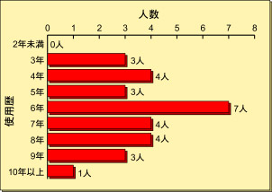
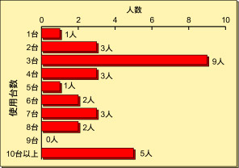
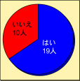
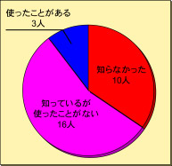
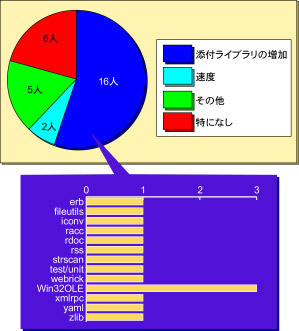
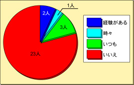

小アンケート企画「いまさら ruby 1.6？」
はじめに
いつも Rubyist Magazine をご愛読いただき、誠にありがとうございます。 おかげさまで Rubyist Magazine も今回で一周年を迎えることができました。
記念の記事を企画する中で、天邪鬼な編集者が「Ruby 1.6 を取り上げよう」と言い出して アンケートをとってみたはいいが、けっきょく一周年記念特集になりそびれてしまった、 そんなお話でございます。
目的
「Ruby の現在主流のバージョンは既に 1.8、しかしなお残るバージョン 1.6」と いうイメージは正しいか検証し、この視点から現実の構図を提示 します。
Rubyist Magazine 5 号の巻頭言は「誰のための Ruby？」でした。
ひねって、「いま働いているシステムのための Ruby」と考えてみましょう。 いま、Ruby 1.8.0 の登場(2003 年 8 月 4 日)から丸二年になります。 ということは、二年以上がんばりつづけているシステムを動かす Ruby は、 少なくとも二年前には Ruby 1.7 以前だったことになります。その時点で、 安定版で最も新しかった Ruby 1.6 台を採用したシステムも、少なくないで しょう。ある意味、たったの二年です。Ruby 1.6 は、きっと今もどこかで 誰かを支えているのでしょうね。逆に、二年もの間、とも考えられます。 Ruby がからんで二年間も実稼動したシステムの話なら、ぜひお聞きしたい。
Ruby の日々の進化とは別の姿の、しかしどこかで誰かの日々を支えている Ruby の姿。そして、それと裏表の関係をなす、たとえば CVS head の Ruby を 「追っかけない」(あるいは「追いかけられない」)ユーザの姿。これらも また、Rubyist Magazine が、何かの形で記録にとどめておくべき姿なので はないか―そんな風に考え、役に立つ素材を何か集めようと企画を練り あげたのが、今回のアンケートです。
もっぱら使い方・使われ方といった「行動面」「実績面」を質問します。 Ruby 暦が2年以上の人が使用している Ruby のバージョンを調査しますが、 安定版を最新の 1.8 に移行している割合(定着度合)に重きをおきます。 移行していない人のバージョンアップしない(もしくはできない)理由を 分析できれば、Ruby ユーザと一口に言われる集団の中に「構造」が見え てくる…かもしれません。
参考文献
- 関満博『現場主義の知的生産法』p.120-122
- 関満博『現場主義の人材育成法』p.166
アンケート期間
2005 年 8 月 12 日から 2005 年 8 月 26 日までの二週間。
アンケート対象
対象者は、日本Rubyの会の会員のみなさんにお願いしました。
日本Rubyの会のメーリングリストに 依頼文と 〆切告知文を送り、 任意の回答を求めたところ、多数の方に協力いただきました。御礼申し上げます。
ありがとうございました
結果分析
アンケートの内容とみなさんの回答の詳細はうしろにまとめました。 これを独断と偏見で分析します。
Short Summary
(アンケートへの回答をお願いした人にとっては、このアンケート自体が) いまさらすぎ。
Medium Summary
日本 Ruby の会会員について。
- Ruby 1.8 以降が常用されている。「共通言語」は 1.8 である。
- 逆に見ると、本アンケートの分析視点からみて会員は均質であり、事前に想定した、1.6 常用組と 1.8 常用組というような「構造」は確認できなかった。
1.8 への移行・定着について。
- 「1.6 で動けば 1.8 でもたいてい動く」自然な形で移行した仕様と、標準添付ライブラリの充実によるところが大である。
Long Summary
共通の設問では、常用しているバージョンなどの基礎データなどを質問しました。
使用歴
「Rubyの使用歴を教えてください。」は、ある種確認の質問。回答母集団の平均的な Ruby 使用年数は短すぎないか、確認しました。 短すぎると、1.6→1.8 の移行に関する状況がまったく見えなくなってしまいます。 回答を見ると、みなさん使用年数は充分に長そうです。にやり。1.6.x 時代からの使用者が充分に多そうなことも、分析結果の有効性にはプラス影響です。
Ruby が動作するマシンの数
次の質問「Rubyが動作するマシンを何台、主に使っていますか？ それぞれでのRubyのバージョンを教えてください。」は、別項の回答と対比させることで、Ruby の用途とバージョンとの相関などが浮かび上がるように考えました。また回答者層の偏りがどの程度かを、結果からある程度判断できると踏んでいました。 回答を見ると、ごく一般の市井人に比べればマシンの使用台数は多めに振れたものの、とりたてて偏っているとはいえないでしょう。また個人保有台数とそれ以外の比率が 1:1 を覆う形で分布していることも、分析結果の有効性にはプラス影響です。
Rubyのバージョン
さて第一の注目箇所です。「どのバージョンのRubyを主に使っていますか？」 さすがに 1.4 以前を主に使用するとの回答は在りませんでした。「主に使用」という点ではしかし、1.6 もほとんど使われていないようです…おやおや？
カスタマイズ
何かの都合で Ruby をカスタマイズしている場合に、そのことがバージョン移行の障害になりえるものと予想して、「Ruby本体を変更(カスタマイズ)して使っていますか？」と質問しました。しかし回答内容から浮かび上がったのは、自作 (？) アプリケーションは Ruby 本体に「手を加えなくても動くようにする」というユーザの姿勢でした。
Ruby on Rails
「Ruby on Rails は使いたいと思いますか？」という質問は、Ruby 1.8.2 以降を動作条件とするアプリケーションとして代表的なものを取り上げて、1.6 ユーザがそれを使おうと思うか、思う場合の行動は、などを調べるときに参照するために設けました。少なくとも今回の対象者にとっては充分に名の知れた例を取れたように思います。
Ruby のバージョンアップへの追従
次の「Ruby 1.6 から Ruby 1.8 への移行は経験されていますか？ なにか困難はありましたか？」という質問は第二の注目点で、非移行者にとってそれ自体で有益な情報となるようにも考えました。ほとんどの回答者が移行を経験しているため、個別のトラブルの有無はともかくとして、目論見どおりの有意義な情報が得られました。けれども、これだけの率で移行が進んでいる、ということは…
なお cgi.rb に関しては、堀川久さんによる Ruby CGI Adjuster で Ruby 1.6 用の CGI スクリプトを Ruby 1.8 で動くようにできます。
ruby-shim
共通の設問の最後に加えた質問は、ruby-shim についての知識を問うものですが、 このライブラリの存在価値はまだなくなっておらず (と予想し)、またこれの利用率に直結する利用の必要性が本アンケートの目的に沿っていたので設けました。全体の 6 割が「知っている」と答えるなど知名度はまずまずでしたが、その中での利用者は 2 割に満たないものでした。
さて、ここで設問が分岐するわけですが。 「Ruby 1.6 以前が主」を答えた人は一名。一名。さらに、この方は「Ruby 1.8 以降が主」と両方の回答だったので、実質、質問を分岐させる意味がありませんでした。
ОГИ
「1.6」の方の分岐で 1.6 ユーザの実態や意識を浮かび上がらせることが、アンケートの主目的みたいなものだったのですが…
「Ruby 1.8 以降が主」の回答者向けの設問
気を取り直して「Ruby 1.8 以降が主」の回答者にむけた設問に進みます。 こちらの分岐では、1.8 に移行済みのユーザがどのくらい旧バージョン 1.6 を意識しているかに焦点を当てました。
Ruby 1.8 になってうれしかったこと
最初の設問「Ruby 1.8 になって一番うれしかったことは何ですか？」は、ユーザが意識する 1.8 での変化点を見るためのものでした。スピード向上を挙げる方は少なく (ちょっと意外かも)、挙げられたことのほとんどがライブラリの標準添付の充実に関するものでした。また、「特になし」(憶えていない、など)との回答が 2 割に達したことも注目すべきでしょう。
Ruby 1.8 のリファレンス
次の「Ruby 1.8 対象の書籍形態のマニュアルは欲しいと思いますか？」は、題意に叶う日本語の書籍が未だない中で、1.8 の新刊本のニーズがあるかを見たものです。積極的な意思表示は少なく、賛否は割れる、という、ある意味興味深い結果となりました。
書籍形態のマニュアルに代わるものとしては、 オブジェクト指向スクリプト言語 Ruby リファレンスマニュアルが多用されています。 このマニュアルに代表される Ruby のオンラインドキュメントを整備するためのメーリングリストとして Rubyist ML があります。
 紙の書籍としては、『Ruby デスクトップリファレンス』が取り上げられており、1.6 での定番書籍といえそうです。
紙の書籍としては、『Ruby デスクトップリファレンス』が取り上げられており、1.6 での定番書籍といえそうです。
スクリプトの互換性
「古い (1.6.x 以前の) Ruby では動くけれど Ruby 1.8.x 以降では動作しないようなスクリプトを書いてしまうことはありますか？」の設問では「逆だったらあるかも」という意見を多くいただきましたが、まさに「逆」狙いで、1.8 仕様がどこまでユーザの意識に定着しているかを見る設問でした。 結果からは、アンケート対象のユーザの大多数は 1.8 仕様でものを考えている、と見ても過言ではなさそうです。
前のバージョンの Ruby を使う時
最後の「1.6.x 以前の Ruby を使わなければならないとき、どんな資料を頼りにして対応しますか？」は少々意地悪くシチュエーションをぼかして、1.6 使用を強要されたときのユーザの行動を探ってみました。なんとしてでも 1.8 を使ってもらうよう逆に説得、という回答が予想通りにありました :-) 最も多い回答は「実動作の参照」で、「マニュアルの参照」がそれに続きますが、僅差で「書籍」と「Google」が同数挙がっているのは、ひょっとしたら時代の記録として貴重なものになっているのかもしれません。(なっていないのかもしれません。)
アンケート回答者の中にはいませんでしたが、本稿読者の中には 1.6 メインのユーザーがいるかもしれません。以上は参考になったでしょうか？
残された課題、新たな課題、ほか
「本当に 1.6 ユーザはいないのか？」これについては、本分析からは 何も言えません。もしいたとしたなら、本アンケートのような質問を 投げかけてみたいとは思います。引き続きの課題とさせてください。 読者からの声にも期待しています。
ここでは定量的な相関関係を取るような分析は一切行いませんでした。 結果が当初の目論から外れてしまったことと、回答の内容から有意で かつ有用な相関関係を発掘できなかったのがその理由です。とはいえ、 何かアイディア一つで、興味深い分析結果が出せるのかもしれません。 将来の課題とさせてください。
とにかく設問が (無惨なほど) 拙かったので、将来、今回の延長で もっと広範囲での調査を行うにせよ、まったく別の企画を行うにせよ、 もうちょっと中身を練るべきであると痛感しました。
アンケートの内容
設問の内容と回答の分布に続いて、いただいたコメントを列挙してあります。
共通の設問
使用歴
Ruby の使用歴を教えてください。 
Ruby が動作するマシンの数
PDA、ノート型 PC、デスクトップ、ワークステーション等含めて、Ruby が動作するマシンを何台、主に使っていますか？ 
個人所有とそれ以外の割合:

Rubyのバージョン
どのバージョンの Ruby を主に使っていますか？

※C.t.H == CVS trunk HEAD
- デスクトップには 1.4.4 以降の全てのリリースされたバージョンの mswin32 版バイナリを入れてありますが、どれも動作確認に使う程度
カスタマイズ
Ruby 本体を変更 (カスタマイズ) して使っていますか？

カスタマイズせずに使っている
- 変更することはあっても、それをベースにアプリケーションは作りません
- 実験的にはいじることがあっても，正式に commit されていないものは常用はしていません
- 私には出来ません
Ruby on Rails
Ruby on Rails に興味はありますか？

Ruby on Rails は使いたいと思いますか？ 
Ruby on Rails には興味もないし使いたいとも思わない
- 何をするものなのかよくわからない
- 現在の業務では必要ない
Ruby on Rails に興味はあるが使いたいとは思わない
- 似たようなライブラリを自作して使ったりしてるので
- 面白いけど、積極的に使いたいとは思わないです
Ruby on Rails に興味もあるし使いたいとも思う
- 面白いです
- ActiveRecord 単体では何度か使っています
- 一度は触ってみたい
- でもまだぜんぜん使ってません
- 社内で使うウェブアプリを作りたいと思ってます
- 機会があり、インストールがもっと気楽であれば
- 使う機会が無い。友人には強力に推薦しておいた
Ruby のバージョンアップへの追従
Ruby 1.6 から Ruby 1.8 への移行は経験されていますか？

なにか困難はありましたか？

バージョンアップした際に困難があった
- 仕様の変化でアラームが出て，多少とまどいました
- メソッド名の変更等でサンプルコードが動かないのには閉口したかも
- 修正が必要なライブラリの洗い出し
- 拡張ライブラリの作り直し他、後で追加したライブラリの再インストールが面倒でした
- ASR のポーティングが困難ではなかったけれど単純ではなかった
- AsWiki の Namazu インターフェイスが動かなくなって調べるのが面倒で 1.6.8 に戻した記憶があります
- cgi.rb 変更で掲示板などが動かなくなったぐらい
- CGI まわりを少し直した覚えがあります
- FormDesigner が動かなくなって、多少ソースをいじった記憶が。
- 個人の軽いスクリプティングに使っているものは楽に移行できましたが、業務用で皆が使っている RWiki や Hiki、eruby による Web ページなど、簡単に止められないものはちょっと苦労しました。ぶっつけ本番でやってみて動かないから放置、って訳にいかなかったので。
バージョンアップした際に困難はなかった
- 困りそうなのは移行させなかった。
- たぶん、互換性がないのを前提としてたからだと思います。
- 1.8 リリース前から事前にわかっていた非互換は徐々に吸収していたので、それほど苦労しなかった。
- 1.7 を経由してゆるやかに移行したので
- 1.6 ではなにもしていなかったので
- そのままでは動かなかったことくらい
- なんか一部警告やエラーがでたような憶えもあるが大過なし
- 一部ソースの修正をした記憶があるが、特に問題は無かった
- パラメータ取得のコードを直した記憶があります
- 拡張ライブラリの再インストールが面倒だったくらい
- それほど困難はない(自分で作った拡張ライブラリ未移行…)
- getopts が警告を発するようになって残念。結構使っていたので
- 1.8.x 内での互換性のなさに苦労したことはあります
ruby-shim
Ruby 1.6 上で Ruby 1.8 上の機能を実現するための ruby-shim はご存知ですか？利用しています/いましたか？ 
ruby-shim は知っているが利用したことはない
- コードを提供した気がしますが自分では使ってません (ぉ
- 使い出したら 1.8 への移行が億劫になるかなと思い使いませんでした
- 用のあるときは必要なメソッドだけ補う感じでなんとかなってます。
- 最新の Ruby/Tk を提供できるようにすることも考えたことはありますが，労力が追い付かないと思えたため断念しました．
- (レシピ本にチラッと出ていたので :) 知ってはいます。
- 移行作業をしているとき、むしろ逆のライブラリ (1.8 が 1.6 同様になる) があればいいな、と思った覚えがあります。バイナリだけ差し替えといて、後で徐々に移行できるんじゃないかなと。
- 何度も get している。
ruby-shim を利用したことがある
- FreeBSD では利用
「Ruby 1.6 以前が主」の回答者向けの設問
さて、Ruby 1.6 以前を主に使っている方には、以下の質問に答えていただきました。
Ruby 1.6 のリファレンス
Ruby の書き方では、何を一番参考にしていますか？ 人でも書籍でも雑誌でも Web サイトでも構いません。
 Ruby のバイブル『オブジェクト指向スクリプト言語 Ruby』を
挙げた方は居ませんでした。
とは言っても全回答者は一名なのですが。
Ruby のバイブル『オブジェクト指向スクリプト言語 Ruby』を
挙げた方は居ませんでした。
とは言っても全回答者は一名なのですが。
- オンラインマニュアル
- ローカルマシンに置いてあるマニュアル
- 実動作
Pragmatic Programmers の本
 Pragmatic Programmers (David Thomas & Andrew Hunt) が
最近新しく Ruby の本を出しましたが、もう読みましたか？
Pragmatic Programmers (David Thomas & Andrew Hunt) が
最近新しく Ruby の本を出しましたが、もう読みましたか？
- いいえ
Ruby 1.8
Ruby 1.8 を主に使わないまでも、試したことはありますか？ 試してみて、移行したいと思いましたか？ どうしてですか？
Ruby 1.8 に移行したい
- 便利だと思っている。
- 添付ライブラリが増えた事
- Array、Enumerable で増えたメソッドとか便利。
不具合・脆弱性
Ruby 1.6 は既にメンテナンスされていませんが、仮に今後 使用中の Ruby に、セキュリティ上の不具合・脆弱性が見つかっ たとき、何を頼りにして対応しようと思いますか？
- 正直頭が痛いです。
「Ruby 1.8 以降が主」の回答者向けの設問
こちらは、Ruby 1.8 以降を主に使っている方への質問です。
Ruby 1.8 になってうれしかったこと
Ruby 1.8 になって一番うれしかったことは何ですか？ 
多くの拡張ライブラリが標準添付になったこと
- 回答のうちクラス、メソッドが増えたことに言及 (2人)
- ほんとは DBI も標準にしてほしかった
速くなった
- load が速くなった(大量のテーブルデータを記述したスクリプトの動的な読み込み)
- 文字列処理が速くなった
それ以外…
- リリースされたこと自体が嬉しかったかも
- そのときの最新版になったということ
- 「Ruby 1.6 がうれしくなかった」のかどうかあまり実感がない
- いろいろうれしいような、苦労が増えたような。
- 自分の書いたライブラリが標準添付になったこと
特になし
- 憶えていない
- 際立った違いは認識 or 実感していない
- 自分が Ruby をまだよく理解していなかったので、違いに気づいたかどうかも怪しい。
- バージョンに依存するような高度な使い方をしていない
Ruby 1.8 のリファレンス
Ruby 1.8 対象の書籍形態のマニュアルは欲しいと思いますか？

書籍形態のマニュアルが欲しい
- 必須ではない
- 実際にはたぶん使わない
- 無くても困っていないが、あれば嬉しい
- 自分自身が使うかはともかく
- 他人に勧めるときに
- 普及と教育のため
- 読みものとしても面白ければ
- あると安心
- 本が出版されてないと勉強しない人もいる
- 『Ruby デスクトップリファレンス』がメンテナンスされるのであれば
- デスクトップリファレンスが特に(索引は改良して欲しい)
書籍形態のマニュアルは要らない
マニュアルの代わりに
- オンラインマニュアル (7人)
-
『Ruby デスクトップリファレンス』
- 出たら買ってしまうと思う/に違いない
- オンラインのマニュアルの方が参照しやすい
- 詳細なリファレンスは HTML ヘルプが一番使いやすい
- 今のところあまり必要性を感じません (Ruby 2.0 では必要になると思いますが)
- 少なくとも次のメジャーバージョンアップまではいらない
- 単なるリファレンスなら別になくても良い
- お布施の意味なら買いますが…
- 書籍を作成することによって、ruby-lang のリファレンスマニュアルがより見やすくなる(相互変換できるように作成するとか)ならば
- 初心者勧誘用に最新環境で「256 本」のような物が欲しい


スクリプトの互換性
古い (1.6.x 以前の) Ruby では動くけれど Ruby 1.8.x 以降では 動作しないようなスクリプトを書いてしまうことはありますか？ 
古い Ruby だけで動くようなスクリプトを書いてしまう
古い Ruby だけで動くようなスクリプトは書かない
- 1.9 で動いて、1.8 で動かないスクリプトなら
- 1.8 で動いて、1.6 で動かないスクリプトなら
- 1.8 以降でしか書けなくなっちゃいました
- 1.6 でコンパイルが通らない拡張ライブラリを作ってしまったことはある
- 覚えていない
前のバージョンの Ruby を使う時
たってのお願いを断り切れず、1.6.x 以前の Ruby を使わなければならないとき、どんな資料を頼りにして対応しますか？ (複数を選択)

あるいはどうやってバージョンアップするように説得しますか？
- Debian が sarge になったから
- Windows Update 効果(笑)で抵抗無し
おわりに
改めてアンケートに協力いただいた方々に御礼申し上げます。 そしてお読みいただいた皆様に感謝。
(アンケート実施・本文: すぎむし、グラフ作成: にし＠おかやま、編集: zunda)